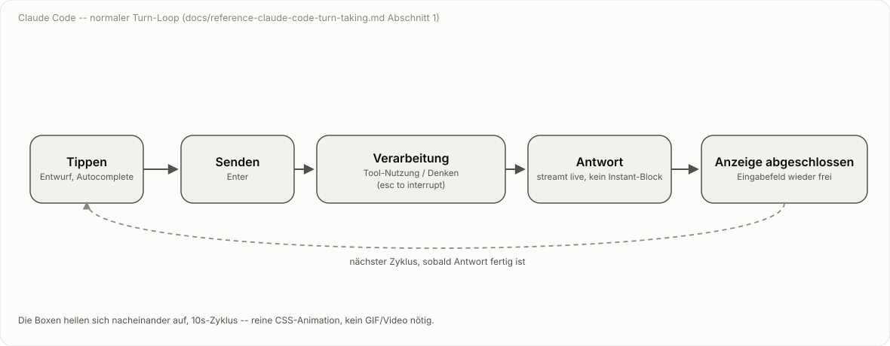
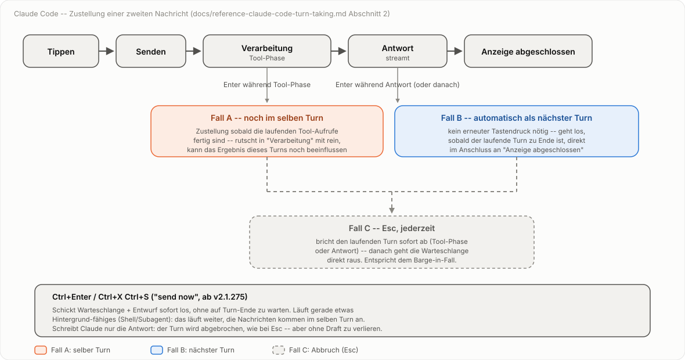

Referenz: Turn-Taking in Claude Code¶
Status: Recherche abgeschlossen (2026-10-02), auf Basis der offiziellen
Dokumentation. Dient als externe Referenz für die eigene Zustandsmodell-
Diskussion in docs/specs/core-dialog-loop.md (siehe dort Abschnitt 7 zur
noch offenen Frage nach Hintergrund-Ergebnissen und Status-Nachfragen
mitten im Turn) -- kein Teil der speech-to-speech-Spezifikation selbst,
sondern Beobachtungsmaterial von einem fremden System.
Quelle: code.claude.com/docs/en/interactive-mode, abgerufen 2026-10-02.
1. Der normale Ablauf¶
Ein Turn in Claude Code (interaktiver Terminal-Modus) durchläuft fünf wiederkehrende Zustände:
- Tippen -- Eingabefeld, Entwurfstext, Autocomplete für
/-Befehle,@-Dateipfade, Emoji-Shortcodes. - Senden --
Enterübermittelt den Entwurf; der Turn beginnt. - Verarbeitung -- Claude nutzt Tools (sichtbar als Tool-Aufruf-Blöcke
mit Ergebnis) und/oder zeigt einen Denkprozess (sofern Extended Thinking
aktiv ist). Fußzeile zeigt
esc to interrupt. - Antwort -- die Modell-Antwort erscheint.
- Anzeige abgeschlossen -- Eingabefeld wird wieder frei, optional mit einem gegrauten Vorschlag für den nächsten Prompt.
Danach beginnt der Zyklus erneut bei 1.

Klickbare Fassung, ein Zustand pro Klick statt Timer:
Korrektur einer Annahme: Antwort streamt, ist nicht atomar¶
Anders als zunächst vermutet (und anders als im eigenen speech-to-speech-
Modell bewusst entschieden, siehe docs/specs/thinking-channel-and-stop-
marker.md Abschnitt 6, "Nicht-Ziele": "Echtes Streaming des
Antwort-Kanals selbst -- bleibt atomar") zeigt Claude Code die Antwort
streamend, nicht instantan nach Fertigstellung:
Esc"stop[s] the current response or tool call mid-turn" -- das setzt voraus, dass die Antwort zum Zeitpunkt des Tastendrucks bereits teilweise sichtbar ist, während der Rest noch generiert wird.- Das Changelog verzeichnet u.a. "Fixed queued commands flickering during streaming responses" und "Claude occasionally posting the same reply twice when a new message interrupted it mid-reply" -- beides setzt voraus, dass "Antwort schreiben" ein Zustand mit beobachtbarer Dauer ist, nicht ein einzelner atomarer Sprung von "nichts" zu "fertiger Text".
Die eigene Entscheidung für einen atomaren Antwort-Kanal (ganz bewusst, u.a. weil Sprachausgabe ohnehin den ganzen Satz braucht) bleibt davon unberührt -- es ist schlicht ein anderes System mit einer anderen Antwortmodalität (Text im Terminal vs. TTS).
2. Was passiert, wenn während der Verarbeitung eine neue Nachricht kommt?¶
Das ist der eigentlich interessante Teil für unsere offene Frage aus
core-dialog-loop.md Abschnitt 7. Claude Code löst das nicht über Barge-in
(Abbruch), sondern über eine Warteschlange, deren Zustellzeitpunkt vom
aktuellen Unter-Zustand abhängt:
- Tippt man eine neue Nachricht und drückt
Enter, während Claude arbeitet, wird sie nicht gesendet, sondern eingereiht ("queued"). Eingereihte Einträge erscheinen grau im Gesprächsverlauf, bis Claude mit der Bearbeitung beginnt. - Zustellung hängt vom Unter-Zustand ab:
- Wird die Nachricht eingereiht, während Claude gerade Tools
ausführt (
Verarbeitung-Zustand im engeren Sinn): Claude bekommt sie noch im selben Turn, sobald die laufenden Tool-Aufrufe fertig sind -- sie rutscht also effektiv mit in den "Claude macht was"-Block hinein und kann das Ergebnis dieses Turns noch beeinflussen. - Wird die Nachricht eingereiht, während Claude die Antwort schreibt
(
Antwort-Zustand), oder ist der Turn bereits zu Ende, wenn sie eingereiht wird: sie wird automatisch als nächster Turn losgeschickt, sobald der laufende Turn fertig ist -- ganz ohne erneuten Tastendruck. Das heißt: sie erscheint direkt im Anschluss an "Anzeige abgeschlossen" als neuer "Senden"-Schritt, nicht mittendrin. - Befehle (
/...) und Shell-Kommandos (!...) werden immer erst nach Turn-Ende abgearbeitet, auch wenn sie während der Tool-Phase eingereiht wurden -- anders als normale Nachrichten. Escbricht den laufenden Turn sofort ab (Tool-Aufruf oder Antwort-Schreiben); eingereihte Nachrichten werden danach direkt losgeschickt -- das ist das eigentliche Barge-in-Äquivalent.Ctrl+Enter(bzw.Ctrl+X Ctrl+S, "send now", ab Claude Code 2.1.275): schickt Warteschlange plus aktuellen Entwurf sofort, ohne auf Turn-Ende zu warten. Was mit dem laufenden Turn passiert, hängt davon ab, was Claude gerade tut:- Läuft etwas Hintergrund-fähiges (Shell-Befehl, Subagent): das läuft im Hintergrund weiter, Claude liest die neuen Nachrichten im selben Turn.
- Schreibt Claude nur die Antwort, oder läuft etwas nicht Hintergrund-fähiges: der Turn wird abgebrochen, die neuen Nachrichten gehen als nächster Turn raus.
Up-Pfeil aus der ersten Zeile des leeren Eingabefelds holt eingereihte Nachrichten zum Bearbeiten zurück ins Eingabefeld.
Kurz: die vom Nutzer vermutete Alternative "mitten in 'Claude macht was' rein" vs. "als nächste Nachricht nach 'Claude antwortet'" sind beide korrekt -- welche zutrifft, hängt einzig vom Zeitpunkt des Absendens relativ zur Tool- vs. Antwort-Phase ab, nicht von einer bewussten Tastenwahl.

Animierte Fassung derselben zwei Fälle, als durchlaufende Turn-Runde:

Klickbare Fassung, 15 Schritte statt 20s-Timer:
3. Tastenkürzel, sortiert nach Relevanz für dieses Thema¶
| Taste | Wirkung | Kontext |
|---|---|---|
Enter |
Senden (idle) / Einreihen (während Claude arbeitet) | immer |
Esc |
Turn sofort abbrechen, danach Warteschlange senden | während Verarbeitung/Antwort |
Ctrl+Enter / Ctrl+X Ctrl+S |
Warteschlange + Entwurf sofort senden ("send now") | ab v2.1.275 |
Up (erste Zeile, leeres Feld) |
Warteschlange zum Bearbeiten zurückholen | während etwas eingereiht ist |
Daneben gibt es mehrere Tasten, die nichts mit der Warteschlange zu tun
haben, sondern nur einen Zeilenumbruch innerhalb des Entwurfs einfügen,
ohne zu senden -- relevant, weil in der ursprünglichen Frage Alt+Enter
vermutet wurde:
| Taste | Bedingung |
|---|---|
\ + Enter |
funktioniert in jedem Terminal |
Shift+Enter |
nativ in iTerm2, WezTerm, Ghostty, Kitty, Warp, Terminal.app, Windows Terminal |
Option+Enter (Alt+Enter) |
nur nach Konfiguration von Option-als-Meta auf macOS |
Ctrl+J |
funktioniert in jedem Terminal ohne Konfiguration |
Alt+Enter ist also kein zweiter Sende-Modus, sondern nur eine von vier
gleichwertigen Methoden für einen Zeilenumbruch beim Tippen.
4. Bezug zur eigenen offenen Lücke¶
core-dialog-loop.md Abschnitt 7 markiert als "bewusst ausgeklammert":
Hintergrund-Agent-Ergebnisse, die unabhängig von einem laufenden send()
eintreffen, und Status-Nachfragen mitten im Turn, ohne den laufenden Turn
abzubrechen (siehe auch tests/test_background_and_status_gaps.py).
Claude Codes Warteschlangen-Modell liefert dafür ein fertiges, in Produktion erprobtes Muster:
- Ein eingereihter Eintrag wird nicht automatisch als Abbruch behandelt -- der laufende Turn läuft regulär weiter, die neue Nachricht wartet auf einen klar definierten Zustellzeitpunkt.
- Zustellung "im selben Turn" vs. "als neuer Turn" ist nicht Zufall, sondern an einen Zustandsübergang gekoppelt (Tool-Phase endet / Turn endet) -- übertragbar auf die eigene Idee eines dritten, Turn- unabhängigen Hintergrund-Kanals.
EscundCtrl+Enterzeigen zwei saubere Eskalationsstufen: "zum nächstmöglichen Zeitpunkt" (einreihen) vs. "jetzt sofort, auch wenn das den laufenden Turn kostet" (send now) -- ein Vorbild für eine mögliche dritte Option neben "Barge-in" und "regulär warten" bei der eigenen Status-Nachfrage-Frage.
Noch nicht übernommen, nur als Beobachtung festgehalten -- die Entscheidung für die eigene Erweiterung steht weiterhin aus.
5. Hintergrund-Subagenten: Completion-Notification statt Push¶
Zweiter Teil der eigenen offenen Lücke aus Abschnitt 7 von
core-dialog-loop.md: wie kommt das Ergebnis eines Hintergrund-Agents in
den Gesprächsverlauf, wenn es unabhängig von jedem laufenden send()
eintrifft? Claude Code hat dafür einen dokumentierten Mechanismus, der sich
vom Warteschlangen-Modell aus Abschnitt 2 ableitet, aber an einer
entscheidenden Stelle davon abweicht.
Quelle: code.claude.com/docs/en/sub-agents, abgerufen 2026-10-02.
"A background subagent's results reach Claude as a completion notification in a later turn. Claude waits for that notification before reporting the subagent's results, and if you ask about progress first, it reports that the subagent is still running."
Das Ergebnis wird also, genau wie eine nachgeschickte Nutzer-Nachricht,
als Eintrag "eingereiht" und dem Modell beim nächsten natürlichen
Übergang vorgelegt -- gleiche Grundmechanik wie in Abschnitt 2, nur ist der
Auslöser diesmal nicht Enter, sondern das Prozessende selbst.
Der entscheidende Unterschied zur Nachrichten-Warteschlange: kein Push, wenn die Sitzung im Leerlauf ist. Läuft gerade kein Turn (Nutzer tippt nichts, Claude wartet im Zustand "Tippen"), generiert Claude Code nicht von sich aus eine neue Antwort, nur weil die Notification eingetroffen ist. Sie liegt bereit und wartet -- entweder, bis der nächste reguläre Turn sie mitnimmt, oder bis der Nutzer von sich aus nachfragt. Fragt er zu früh (Notification noch nicht da), bekommt er ein ehrliches "läuft noch" statt eines verfrühten (Nicht-)Ergebnisses.
Sichtbar ist davon im Terminal nur eine Fußzeilen-Randnotiz, kein Interrupt im Gesprächsverlauf selbst:
"When a subagent finishes successfully, Claude Code removes its row immediately and [...] shows
/tasks to see subagentsin the footer for 30 seconds."
Mehrere gleichzeitig fertige Hintergrund-Prozesse werden außerdem zu einem Modell-Aufruf gebündelt statt einzeln beantwortet (Changelog: "Fixed headless and SDK sessions making a separate model call for every background task that finished; completions already queued are now answered by one call").
Push statt Pull: bewusste Abweichung für die eigene Spec. Auf
Rückfrage ist die Haltung fürs eigene System klar: ein fertiger
Hintergrund-Agent soll von sich aus eine Antwort auslösen, nicht auf den
nächsten Nutzer-Turn warten. Das ist ein bewusster Bruch mit Claude Codes
Pull-Modell, nicht eine Umsetzung davon -- festgehalten hier als
Entscheidung, noch nicht in core-dialog-loop.md nachgezogen. Die
Warteschlangen-Mechanik selbst (Eintrag wartet auf einen sauberen
Übergabepunkt statt den laufenden Turn zu stören) bleibt trotzdem
übernehmbar; nur der Leerlauf-Fall braucht eine eigene Lösung, die aktiv
einen neuen Turn anstößt statt nur bereitzuliegen.

Experiment: klickbare Fassung statt Timer. Dieselbe Geschichte, aber
Schritt für Schritt per Klick oder Pfeiltaste statt automatisch nach
einem festen 20s-Takt -- acht Schritte, zwei pro Zustandswechsel je Runde.
Eingebettet über <object>, nicht über das Markdown-Bildsyntax: ein als
<img> eingebettetes SVG führt kein <script> aus, <object> dagegen
schon.
6. Diagramme/Animation: Stand und Vorschlag¶
Umgesetzt:
specs/diagrams/claude-code-turn-loop.svg-- animierter Loop der fünf Normalzustände (Tippen -> Senden -> Verarbeitung -> Antwort -> Anzeige abgeschlossen -> zurück zu Tippen), als eigenständiges SVG mit reiner CSS-@keyframes-Animation: die Boxen hellen sich der Reihe nach kurz auf, 10s-Zyklus. Ursprünglich lief zusätzlich ein per SMIL animierter Punkt mit, der die Boxen entlang eines Pfads "abfuhr" -- entfernt, weil er ohne explizitenkeyTimes/keyPoints-Abgleich erst gar nicht synchron zur Box-Aufhellung lief und sich danach als unnötiger zweiter Indikator herausstellte; die Box-Aufhellung allein trägt den Loop. Läuft nativ im Browser ohne GIF/Video-Export, folgt denselben CSS-Variablen/Farbwerten wie die bestehenden Diagramme (Light/Dark viaprefers-color-scheme).specs/diagrams/claude-code-turn-loop-clickable.svg-- dieselben fünf Zustände als klickbare Schrittfolge statt Timer-Loop, fünf Schritte, ein Zustand pro Klick oder Pfeiltaste. Einfachste der vier klickbaren Fassungen -- gut geeignet, um das wiederverwendete Muster (data-step, Schritt-Array im<script>, "Weiter"/"Zurück"-Buttons,<object>-Einbettung) am kleinsten Beispiel nachzuvollziehen, bevor man die komplexeren Fassungen liest.specs/diagrams/claude-code-message-queueing.svg-- statisches Verzweigungs-Diagramm für Abschnitt 2 (die drei Zustellfälle: Tool-Phase/selber Turn, Antwort-Phase/nächster Turn automatisch, Esc-Eskalation).specs/diagrams/claude-code-message-queueing-animated.svg-- animierte Fassung der beiden zeitabhängigen Fälle (A/B, ohne die Esc-Eskalation, siehe Fall C im statischen Diagramm): ein 10s-Durchlauf der Box-Aufhellung steht für einen Turn, über einen 20s-Gesamtzyklus wechseln sich zwei durchgespielte Runden ab. Runde 1: Nutzer schickt während der Tool-Phase nach -- die Verarbeitung-Box macht dabei sichtbar einen zweiten Anlauf (heller Puls, fällt kurz auf neutral zurück, pulst dann noch einmal, begleitet von einem kleinen "↺"-Symbol und der Beschriftung "neue Nachricht -- Verarbeitung läuft erneut an"), statt einfach unverändert weiterzulaufen -- genau dieses Weiterlaufen-als-wäre-nichts-passiert wäre irreführend, weil die neue Nachricht ja erst noch mitverarbeitet werden muss. Parallel dazu die Nachrichten-Sprechblase: gelbe Sende-Farbe -> graue Warteschlange -> orange Zustellung, zeitlich auf den zweiten Verarbeitung-Puls gelegt. Runde 2 (während der Antwort) bekommt diese Behandlung bewusst nicht -- dort pulst jede Box nur einmal, denn die Zustellung passiert ja nicht mitten im Turn, sondern erst als eigener nächster Turn. Reine CSS-@keyframes, alle Prozentangaben direkt auf den 20s-Gesamtzyklus gelegt statt auf eine gemeinsameanimation-delay, weil sich Runde 1 und Runde 2 für die Verarbeitung-Box jetzt unterscheiden müssen.specs/diagrams/claude-code-message-queueing-animated-clickable.svg-- dieselbe Geschichte als 15 klickbare Schritte (acht für Szenario A, sieben für Szenario B), mit demselben Schritt-Array-Muster wie die anderen klickbaren Fassungen. Der Verarbeitung-Neustart in Szenario A wird jetzt über ein explizitesbox3: 'neutral'-Zwischenschritt-Objekt modelliert (Schritt 5: Box fällt auf neutral zurück, Nachricht wartet grau) statt über Prozent-Keyframes -- dadurch ist der Dip vor dem zweiten Puls ein eigener, benannter Schritt statt eines Zeitfensters, das man nur beim genauen Hinsehen bemerkt.specs/diagrams/claude-code-background-notification.svg-- zwei Spuren übereinander für Abschnitt 5: oben die Hauptsitzung (vereinfacht auf Leerlauf/Turn-aktiv statt aller fünf Zustände, da hier nur relevant ist, ob gerade etwas läuft), unten ein Hintergrund-Agent (gestartet -> läuft -> fertig, Notification wartet grau). Wieder zwei Runden im 20s-Zyklus: Runde 1 -- Agent wird fertig, während die Hauptsitzung gerade einen Turn aktiv hat: Notification wird kurz danach blau als zugestellt markiert, dieselbe Merge-Logik wie Abschnitt 2. Runde 2 -- Agent wird fertig, während die Hauptsitzung im Leerlauf ist: Notification bleibt grau, solange nichts läuft, und wird erst zugestellt, sobald die Hauptsitzung von sich aus wieder aktiv wird -- aber dann auch sofort, nicht erst eine Runde später. Begleitet von der Beschriftung "wartet, kein Push -- sobald ein Turn beginnt, egal wodurch, wird sie gleich mitgenommen". Zeigt also den Pull-Charakter aus Abschnitt 5 direkt im Bild: der Push fehlt nur für den Anstoß eines neuen Turns, nicht für die Übernahme in einen bereits begonnenen. Korrigiert (2026-10-02): die erste Fassung ließ die Notification in Runde 2 grau, obwohl bereits ein neuer Turn aktiv war -- impliziert fälschlich eine zusätzliche Wartezeit nach Turn-Beginn, die es laut Dokumentation nicht gibt ("reach Claude as a completion notification in a later turn" meint den nächsten Turn, nicht einen übernächsten). Im Review aufgefallen, beim Nachvollziehen der klickbaren Fassung.specs/diagrams/claude-code-background-notification-clickable.svg-- dieselbe Geschichte als klickbare Schrittfolge statt Timer-Loop: eindata-step-Attribut am<svg>-Root, ein eingebettetes<script>mit einem Array aus acht Schritt-Objekten (welche Box wie eingefärbt ist, welcher Beschriftungstext gilt), "Weiter"/"Zurück"-Buttons plus Pfeiltasten, CSS-transitionauffill/stroke/opacityfür einen weichen Übergang zwischen den Schritten. Eingebettet über<object>statt Markdown-Bildsyntax, da ein per<img>geladenes SVG kein<script>ausführt. Löst nebenbei das Dark-Mode-Problem anders als die übrigen Diagramme:prefers-color-schemewird einmalig permatchMedia()in JavaScript abgefragt statt über eine@media-Regel, weil die Farben hier überelement.style.*statt über CSS-Klassen gesetzt werden. Schritt 6 und 7 halten jetzt bewusst denselben Zustand (Notification wartet, Hauptsitzung im Leerlauf), um die unbestimmte Wartezeit erfahrbar zu machen -- erst Schritt 8 startet einen Turn und stellt die Notification im selben Schritt zu, statt wie in der ersten (fehlerhaften) Fassung noch einen Schritt länger grau zu lassen.
Begründung für SVG+CSS statt GIF: die Doku läuft als mkdocs-material-Site
über GitHub Pages -- echtes HTML/CSS/SVG wird vollständig gerendert, ein
GIF wäre hier nur ein Downgrade (größere Datei, keine Skalierung, kein
Dark-Mode). Das von image-video-creator-v2
(projects/voice-pipeline-turn-taking/deck.html, Folien 32-40) bekannte
Prinzip -- Schritte werden einzeln "aufgedeckt" (data-step-Attribute,
CSS-Klasse reveal) -- ist hier als Vorlage für die Teilschritt-Optik
übernommen, aber ohne den dortigen Playwright/ffmpeg/TTS-Videoaufnahme-
Unterbau: dieser ist für eine Doku-Seite unangemessen schwergewichtig.
Offen / nächster Schritt, falls gewünscht:
- Falls eine portable GIF-Datei zusätzlich gebraucht wird (z.B. für
Telegram oder ein GitHub-README, das SVG+CSS nicht zuverlässig rendert):
leichtgewichtiger Playwright-Screenshot-Loop über das bestehende SVG,
ohne den vollen
video-creator-Unterbau -- einfaches Python-Skript, Screenshots zu festen Zeitpunkten, zusammengesetzt mitffmpeg/gifski.